This document covers the file-system based persistence layer and message history management within agent-swarm-kit. The persistence system provides reliable JSON-based storage for agent states, conversation history, and swarm metadata, while the history management system handles both in-memory and persistent storage of agent conversations.
For information about client-side data management, see Storage and State. For details about session lifecycle management, see Session Management.
The persistence layer is built around two foundational classes that provide JSON file-based storage with atomic write operations and directory management.
PersistBase serves as the foundation for all persistent storage operations in the swarm system. It manages entities as JSON files within organized directory structures, providing CRUD operations with built-in validation and error handling.

PersistList extends PersistBase to provide ordered list semantics with push and pop operations. It maintains sequential numeric keys and supports queue-like operations for message storage and event logging.

The history management system provides both persistent and in-memory storage options for agent conversation history, with support for filtering, system prompts, and lifecycle callbacks.
Two primary implementations handle different persistence requirements:

History instances support comprehensive lifecycle management through the IHistoryInstanceCallbacks interface:
| Callback | Purpose | When Called |
|---|---|---|
onInit |
Instance initialization | During waitForInit() |
onPush |
Message addition | Before adding to history |
onPop |
Message removal | Before removing from history |
onChange |
History modification | After push/pop operations |
onRead |
Message iteration | During history reading |
onReadBegin |
Iteration start | Before message iteration |
onReadEnd |
Iteration completion | After message iteration |
onDispose |
Instance cleanup | During disposal |
Specialized utility classes provide domain-specific persistence operations for different swarm components.
Manages active agent tracking and navigation stack persistence per swarm:

PersistStateUtils and PersistStorageUtils provide similar patterns for state management and storage data persistence:
StateNameStorageNameBoth follow the same memoization and factory pattern for efficient resource management.
The persistence layer organizes data in a hierarchical directory structure under ./logs/data/:

Each directory contains JSON files named by entity IDs, with atomic write operations ensuring data consistency across concurrent access.
The persistence and history systems integrate seamlessly with the broader agent architecture:

This integration ensures that agent conversations, state changes, and navigation history are automatically persisted and can be recovered across system restarts.